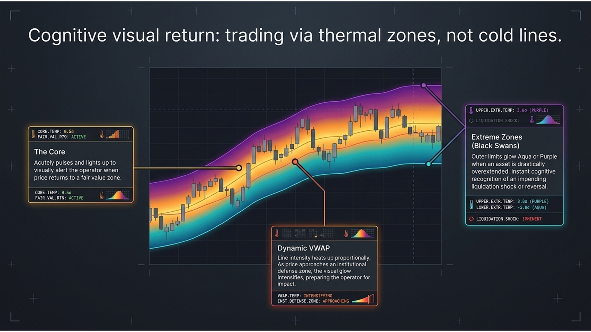
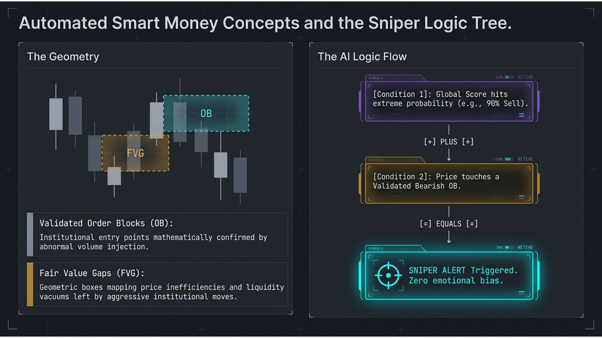
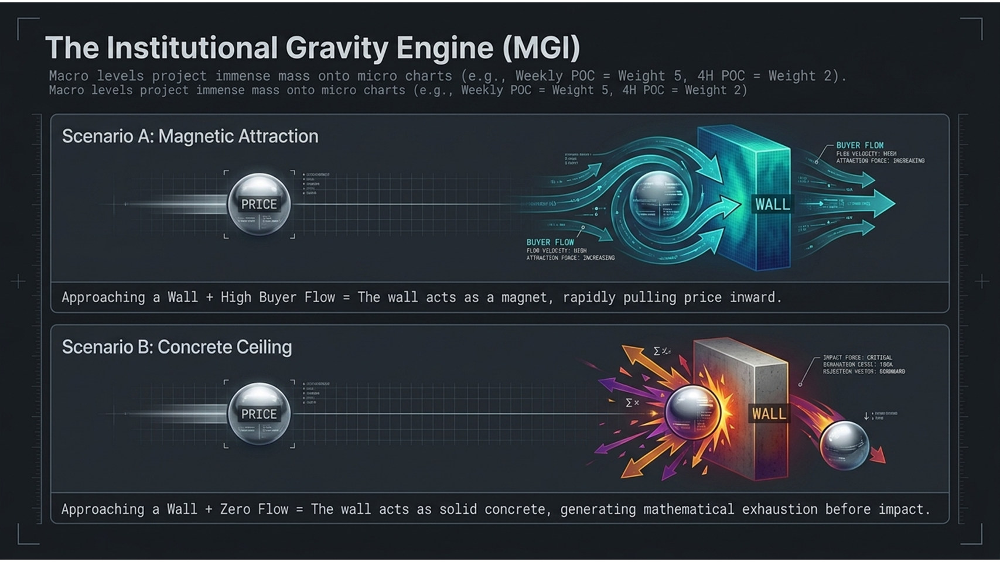
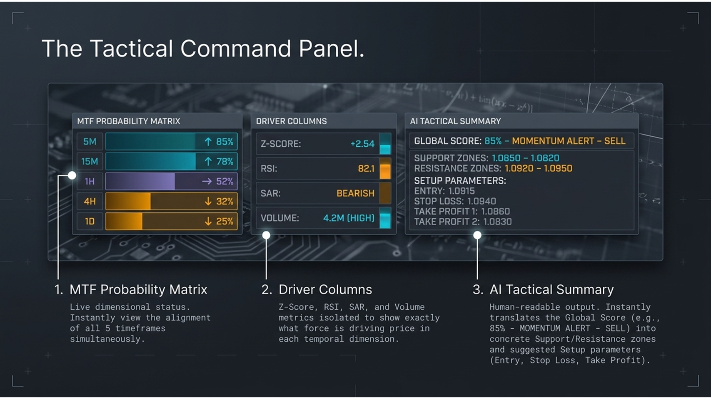
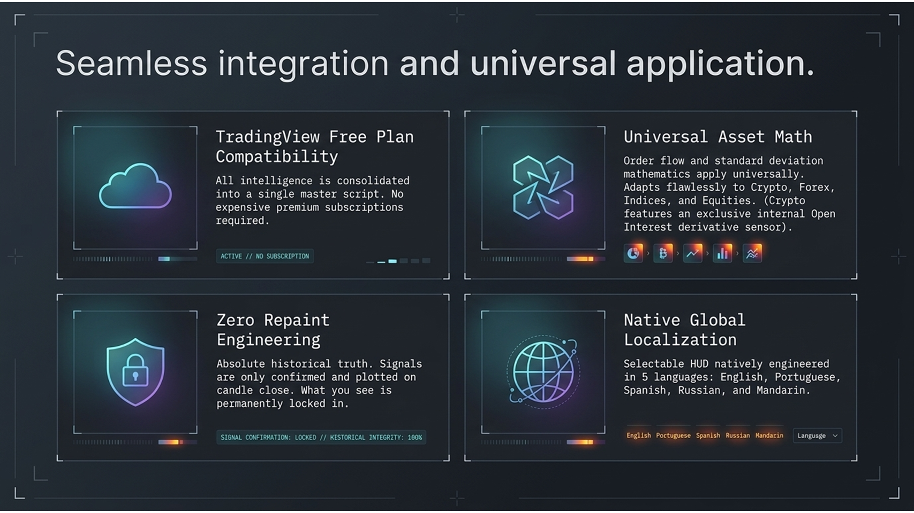

Veja o motor.
Em todos os detalhes.
Todas as camadas da Rainbow Matrix, visualizadas. É assim que se parece a análise de grau institucional.

Retorno Visual Cognitivo: Operando via Zonas Termais.
A Nuvem Rainbow substitui linhas frias e confusas de indicadores por zonas termais. O núcleo pulsa quando o preço retorna ao valor justo. Zonas extremas (Aqua ou Roxo) disparam em alerta máximo — o seu cérebro processa o aviso em milissegundos, não em segundos.

O Multiplicador Multi-Timeframe.
5 monitores × 10 indicadores = 50 variáveis desconectadas por segundo. A Rainbow Matrix executa um Funil de Compressão — colapsando todas as 50 variáveis de 5M, 15M, 1H, 4H e 1D numa única métrica unificada de probabilidade: a Pontuação Global.

Smart Money Concepts Automatizados & Árvore Lógica Sniper.
O sistema desenha automaticamente Order Blocks (OB) e Fair Value Gaps (FVG) — e depois lê-os. Quando a Pontuação Global atinge probabilidade extrema E o preço toca num OB validado simultaneamente, dispara uma saída: ALERTA SNIPER. Zero viés emocional.

O Motor de Gravidade Institucional (MGI).
Níveis macro de gráficos Semanais e Diários lançam a sua massa gravitacional sobre tempos gráficos micro. Com fluxo comprador, a muralha atua como um íman. Sem ele, é um teto de cimento — gerando exaustão matemática antes mesmo de o preço a tocar.

O Oscilador Global: Um coração sintético que se adapta à volatilidade.
Ao contrário dos RSIs tradicionais presos estaticamente entre 30 e 70, o Tempo Gráfico Sintético (0–100) cria dinamicamente o seu próprio teto, chão e eixo central em tempo real. SNIPER, FORTE, DEFESA — cada tipo de sinal é classificado por regras matemáticas estritas.

O Painel de Comando Tático.
Três painéis. Um cockpit. A Matriz de Probabilidade MTF mostra o alinhamento de todos os 5 tempos gráficos ao vivo. As Colunas de Força isolam o que está a mover o preço. O Resumo Tático IA traduz tudo para linguagem humana: Entrada, Stop Loss, Take Profit.

Cruzando disciplinas analíticas para localizar a verdade estrutural.
Quatro escolas analíticas distintas — VWAP Institucional, Volume Profile, CVD & Squeeze, e Rastreio de Derivados — são todas fundidas num único ponto de confluência absoluta. Nenhum indicador isolado comanda o show. Todos devem concordar.

Integração contínua e aplicação universal.
Um script. Sem necessidade de planos caros do TradingView. Zero repaint — os sinais são trancados no fecho da vela, permanentemente. O HUD fala o seu idioma nativamente: Inglês, Português, Espanhol, Russo e Mandarim.

Construído para níveis: Da simplicidade visual à profunda profundidade institucional.
O Nível 1 usa cores e percentagens. O Nível 2 filtra os alertas Sniper para o telemóvel. O Nível 3 disseca o Motor de Gravidade com precisão cirúrgica. A máquina cresce consigo — em cada fase, ela já está à sua espera no nível seguinte.